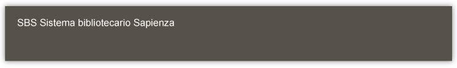
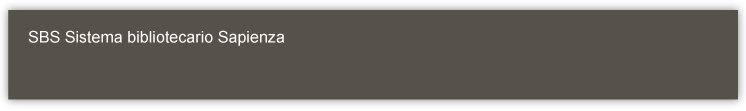

Biblioteca Alessandrina
La Biblioteca Alessandrina, che è un istituto del Ministero per i Beni e Attività Culturali, mette a disposizione degli studenti universitari un certo numero di posti per studiare con i propri libri. Essendo tale numero limitato, è necessario occupare un solo posto.
In biblioteca si parla a voce bassa per non disturbare chi studia, non si sosta nei corridoi e non si usa il telefono cellulare, che dovrebbe essere spento prima di entrare. Il computer situato nel corridoio è adibito esclusivamente alla consultazione del catalogo online della biblioteca. In nessun locale è permesso introdurre cibi bevande.
Il rispetto del regolamento interno e osservare le più comuni norme di buona educazione renderà possibile un servizio migliore.
SERVIZI:
Per cercare un libro o un periodico:
La prima cosa da fare è consultare i cataloghi della Biblioteca tramite quello a schede,
per le pubblicazioni catalogate prima del 1990, e quello on-line, attraverso la postazione appositamente allestita,
per i volumi entrati in biblioteca dopo il 1990.
Per usufruire del servizio di prestito:
È necessario iscriversi dimostrando di essere residenti nella regione Lazio e presentando all'Ufficio
Prestito un documento d'identità accompagnato da due fotografie formato tessera; per i non residenti nella regione, purchè studenti presso
una delle Università del Lazio, occorre anche esibire le ultime tasse universitarie pagate.
Non si effettuano fotocopie di pubblicazioni anteriori al 1950 compreso.
Se si è interessati a redigere una bibliografia, identificare opere di cui non si hanno dati precisi,
o che non sono presenti in biblioteca e vanno quindi reperite altrove, e per qualsiasi altra informazione è possibile rivolgersi a
ll'Ufficio Informazioni Bibliografiche.
Free Wi-Fi:
In biblioteca è attiva un'area wireless per tutti coloro che possiedono la password dell'Università "La Sapienza", che permette di navigare liberamente in internet sui propri computer o su quelli che la Biblioteca mette a disposizione degli utenti. Dal computer destinato al pubblico è possibile accedere solo ai siti culturali selezionati nel programma Preferiti : opac della biblioteca, SBN, Internet culturale.
DOVE SIAMO:
La Biblioteca si trova all'interno dell Città Universitaria dell'Università degli Studi di Roma La Sapienza, al 4. piano del Palazzo del Rettorato.
Indirizzo: Piazzale Aldo Moro, 5 - 00185 Roma
Tel: 06/44740220 (Centralino)
Fax:06/44740222
E-mail: alessandrina@librari.beniculturali.it
COME ARRIVARE:
Dalla Stazione Termini:
BUS:310 o 649
Metro: Linea B fino al Policlinico Umberto I tram 3 o 19
Dalla Stazione Tiburtina:
BUS:492 o 71 o 163
Dall'Aeroporto:
Treno fino alla Stazione di Termini Bus 310 o 649
Treno fino alla Stazione di Tiburtina Bus 492 o 71.
Note Storiche:
La Biblioteca Universitaria Alessandrina fu fondata nel 1667, su progetto e per volontà di Papa Alessandro VII, Fabio Chigi, come biblioteca dello Studium Urbis.
Il nucleo storico delle raccolte della biblioteca è costituito dai duplicati della biblioteca Chigiana (1644),
dai 423 duplicati della biblioteca Vaticana e da una parte della preziosa biblioteca dei duchi di Urbino (1666). Al cosiddetto "Fondo antico" si uniscono,
a partire dal 1815, gli esemplari delle opere stampate nello Stato Pontificio e, dal 1870, gli esemplari di quelle stampate da tipografie della provincia
di Roma.
Attualmente, in base a quanto previsto dalla L.106/2004, la Regione Lazio ha individuato la Biblioteca Universitaria Alessandrina come istituto
per il deposito legale dei documenti di interesse culturale destinati all'uso pubblico, pubblicati da editori della Provincia di Roma.
Nel 1935, con il trasferimento dall'antico Palazzo della Sapienza di Corso Rinascimento alla nuova sede dall'interno della Città Universitaria,
vengono depositate nell'Alessandrina le preesistenti biblioteche delle Facoltà di Lettere, Giurisprudenza e Scienze politiche. Successivamente,
importanti donazioni (Fondo Vittorio Rossi, Fondo Schupfer, Fondo Chiovenda...) sottolineano l'esistenza di un rapporto vitale fra l'istituzione e
la cultura accademica.
L'Alessandrina può oggi definirsi importante biblioteca di cultura generale con prestigiose collezioni storiche, prevalente
specializzazione umanistica ed interessanti e pressoché esaustive testimonianze sull'editoria e tipografia romana otto-novecentesca.
La Biblioteca Universitaria Alessandrina è una biblioteca pubblica statale che dipende, dal 1975, dal Ministero per i Beni e le Attività Culturali.